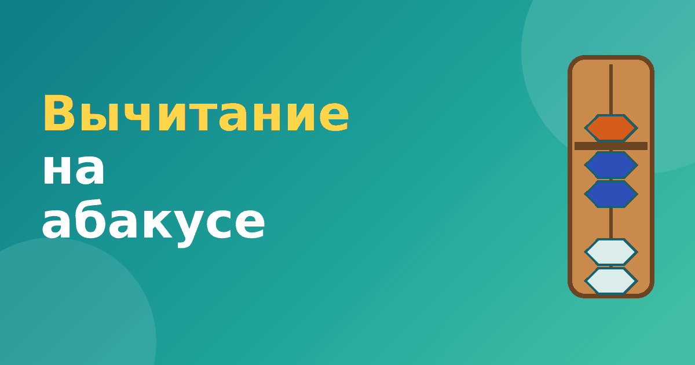

Вычитание на абакусе: правила и примеры для детей

Вычитание на абакусе устроено зеркально сложению: вместо добавления бусин мы их убираем. Но есть тонкости, из-за которых вычитание детям часто даётся тяжелее. Здесь важно понимать, что именно делать, если убирать нечего. В этой статье разберём все случаи вычитания на абакусе с примерами.
Простое вычитание: убираем бусины
Если на стержне есть то, что нужно убрать, всё просто: отодвигаем бусины от перекладины.
- 9 − 4 = 5. На стержне верхняя и четыре нижние бусины. Убираем четыре нижние, остаётся верхняя: 5.
- 8 − 5 = 3. На стержне верхняя и три нижние. Убираем верхнюю (это 5), остаются три нижние: 3.
- 7 − 2 = 5. Убираем две нижние бусины. Остаётся верхняя.
Правило простое: смотрим, есть ли на стержне нужные бусины. Если есть, убираем.
Когда убирать нечего: помощь брата
Пример: 6 − 3. На стержне цифра 6: верхняя и одна нижняя. Нужно убрать три единицы, но нижней бусины всего одна. Выход: убрать верхнюю бусину (минус 5), а потом добавить недостающие нижние. Сколько добавить? 5 − 3 = 2. Получаем: 6 − 5 + 2 = 3. Ответ верный, так как 6 − 3 = 3.
Так выглядит помощь брата при вычитании: «забираю пять и возвращаю лишнее». Подробнее об этом приёме — в статье помощь брата на абакусе.
Когда не хватает на самом стержне: заём десятка
Теперь пример: 13 − 6. На стержне единиц цифра 3, а вычесть нужно 6. Взять шесть из трёх невозможно. Значит, нужно «занять» десяток у соседнего стержня слева.
- Убираем одну бусину на стержне десятков (минус 10).
- На стержне единиц добавляем недостающее: 10 − 6 = 4. Было 3, стало 3 + 4 = 7.
Проверка: 13 − 6 = 7. Всё сошлось. Такое правило называется «помощь друга» при вычитании: десяток «приходит на помощь» единицам. Разбор — в статье помощь друга на абакусе.
Вычитаем многозначные числа
Двузначные и трёхзначные числа вычитаем по разрядам. Например, 58 − 23. Набираем 58: 5 на левом стержне, 8 на правом. Вычитаем 2 десятка: на левом стержне было 5, стало 3. Вычитаем 3 единицы: на правом было 8, стало 5. Ответ 35.
Если в каком-то разряде вычитаемое больше имеющейся цифры, используем заём десятка у соседнего стержня. Пример: 52 − 17. Вычитаем 1 десяток: 5 − 1 = 4 в десятках. Теперь единицы: нужно вычесть 7, а на стержне 2. Берём 1 десяток слева (там было 4, станет 3) и на стержне единиц делаем 2 + (10 − 7) = 5. Ответ 35. Проверим: 52 − 17 = 35. Верно.
Типичные ошибки
- Ребёнок убирает лишнее, но не добавляет остаток. Ответ получается меньше правильного.
- Забывают убрать десяток у соседнего стержня при займе. Тогда ответ больше на 10.
- Путают порядок: сначала нужно подумать, хватает ли бусин, и только потом двигать.
Пример целиком: 71 − 38
Набираем 71: 7 на левом стержне, 1 на правом. Вычитаем 38. Сначала десятки: 7 − 3 = 4. Теперь единицы: нужно вычесть 8, а на стержне 1. Занимаем десяток у соседа слева: там было 4, станет 3. На правом стержне 1 + (10 − 8) = 3. Получилось 3 и 3, то есть 33. Проверка: 71 − 38 = 33. Верно.
Если ребёнок объясняет каждый шаг словами, это лучший признак понимания. Попросите его сказать вслух: «Не хватает, занимаю десяток, добавляю то, что до десяти». Через несколько таких проговариваний правило запоминается без зубрёжки. А ещё полезно после вычитания всегда делать проверку сложением: это снижает число ошибок.
Частые вопросы
Почему вычитание труднее сложения?
Потому что в нём чаще встречается «заём» десятка, а ребёнку нужно помнить, что где-то слева убрали единицу. Поэтому вычитанию отводят больше времени.
Как быстро проверить ответ?
Сложите ответ с вычитаемым: должно получиться исходное число. Например, 71 − 38 = 33, проверка 33 + 38 = 71.
Как тренировать вычитание
Вычитание лучше начинать после того, как сложение освоено уверенно. Сначала отрабатывайте простые случаи, затем добавляйте помощь брата и друга. Хорошо работает проверка: после вычитания сложите ответ с вычитаемым и посмотрите, получилось ли исходное число. Например, 35 + 17 = 52.
В нашем тренажёре «Ментальная арифметика» вычитание вынесено в отдельные модули, и в каждом ребёнок пошагово двигает бусины, а подсказки появляются только при ошибке. Прежде чем двигаться дальше, вернитесь к статье сложение на абакусе, если нужно вспомнить базовые правила.